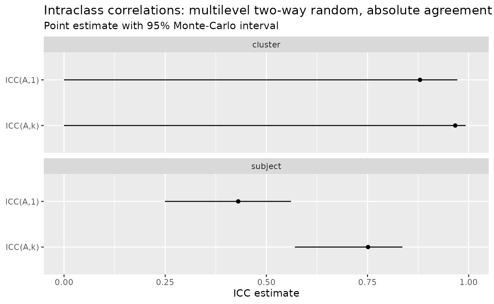

Multilevel designs: subject and cluster level
Source:vignettes/multilevel-designs.Rmd
multilevel-designs.RmdThe Getting started and Choosing an ICC articles treat the subject as the object of measurement. But subjects are often nested in higher-level clusters — pupils in classrooms, patients in clinics — and then “reliability” splits in two: how well raters tell subjects apart, and how well they tell clusters apart. Those are different questions with different answers, and reporting one when you needed the other can be badly misleading. This article covers the multilevel ICC family (ten Hove, Jorgensen & van der Ark, 2022): crossed and nested layouts, complete and incomplete data, fixed raters, and the multilevel D-study. (Any unfamiliar term is defined in the Glossary.)
Subject level vs. cluster level
When subjects are nested in clusters, two reliabilities are defined:
- Subject level (within-cluster): how reliably do raters distinguish subjects within a cluster?
- Cluster level (between-cluster): how reliably do raters distinguish cluster means?
Ignoring the nesting conflates these and biases both (ten
Hove, Jorgensen & van der Ark, 2022). Passing a cluster
column to icc() fits the multilevel model and reports each
level separately.
Consider pupils nested in classrooms, each pupil rated by the same panel of raters. We simulate a design with substantial classroom-level signal but modest within-classroom differences:
set.seed(2025)
n_class <- 16
n_pupil <- 5
n_rater <- 4
grid <- expand.grid(
pupil = seq_len(n_pupil),
classroom = seq_len(n_class),
rater = seq_len(n_rater)
)
class_effect <- rnorm(n_class, sd = 1.3)[grid$classroom]
pupil_effect <- rnorm(n_class * n_pupil, sd = 0.6)[
(grid$classroom - 1) * n_pupil + grid$pupil
]
rater_effect <- rnorm(n_rater, sd = 0.4)[grid$rater]
school <- data.frame(
classroom = factor(grid$classroom),
pupil = factor(paste(grid$classroom, grid$pupil, sep = "_")),
rater = factor(grid$rater),
score = 10 + class_effect + pupil_effect + rater_effect +
rnorm(nrow(grid), sd = 0.7)
)
icc(school, score, subject = pupil, rater = rater, cluster = classroom, type = "agreement", seed = 1)
#> ℹ Treating raters with the same label in different clusters as the same raters
#> (crossed with clusters, Design 1).
#> ℹ If each cluster has its own raters, give them cluster-unique labels or pass
#> `design = "nested_in_clusters"`.
#> ── Intraclass correlation: multilevel two-way random, absolute agreement ───────
#> Subjects: 80 in 16 clusters | Raters: 4 (random) | Observations: 320 (complete)
#> Engine: glmmTMB (REML) | CI: 95% montecarlo (10000 draws)
#>
#> level index estimate 95% CI
#> subject ICC(A,1) 0.431 [0.249, 0.561]
#> subject ICC(A,k) 0.751 [0.571, 0.836]
#> cluster ICC(A,1) 0.880 [0.000, 0.972]
#> cluster ICC(A,k) 0.967 [0.000, 0.993]
#>
#> Variance components: cluster 0.998, subject 0.461, rater 0.136, cluster:rater 0.000, residual 0.473
#>
#> This message is displayed once per session.Both levels come back in one call. Here the
cluster-level ICC is the higher of the two: raters
agree more about which classrooms score high than about which
pupils within a classroom do — exactly the pattern you would
expect when most of the true variation lives between classrooms. Which
number you report depends on the decision you will make: a
classroom-level intervention cares about the cluster-level reliability,
a pupil-level one about the subject level. Request just one with
level = "subject" or level = "cluster".
How much does ignoring the nesting cost? The conflated ICC
What would you have reported if you had ignored the
classrooms and run an ordinary single-level ICC? That number — ten Hove
et al.’s Equation 14 — folds the between-classroom and within-classroom
variation together into one “true score” and is biased for
both questions above. icc() can compute
this conflated ICC as a
diagnostic contrast with
level = "conflated", so you can see the distortion directly
rather than take it on faith:
icc(school, score,
subject = pupil, rater = rater, cluster = classroom,
type = "agreement", level = c("subject", "cluster", "conflated"), seed = 1
)
#> ── Intraclass correlation: multilevel two-way random, absolute agreement ───────
#> Subjects: 80 in 16 clusters | Raters: 4 (random) | Observations: 320 (complete)
#> Engine: glmmTMB (REML) | CI: 95% montecarlo (10000 draws)
#>
#> level index estimate 95% CI
#> subject ICC(A,1) 0.431 [0.249, 0.561]
#> subject ICC(A,k) 0.751 [0.571, 0.836]
#> cluster ICC(A,1) 0.880 [0.000, 0.972]
#> cluster ICC(A,k) 0.967 [0.000, 0.993]
#> conflated ICC(A,1) 0.705 [0.000, 0.805]
#> conflated ICC(A,k) 0.905 [0.000, 0.943]
#>
#> Variance components: cluster 0.998, subject 0.461, rater 0.136, cluster:rater 0.000, residual 0.473
#> Diagnostic contrast: the 'conflated' level ignores the cluster structure
#> (ten Hove et al. 2022, Eq. 14) -- it shows the bias from a single-level
#> analysis and is NOT a recommended coefficient; report subject/cluster.The conflated value lands between the two correct levels and matches
neither: it over- or under-states the reliability of any real decision.
It is printed with a warning label and is never a
coefficient to report — it exists only to quantify the cost of ignoring
the structure. (It is the flat two-way ICC read off the fit, so it comes
in both an absolute-agreement and a consistency form; a default
level = "conflated" call reports both. It needs a crossed,
random-rater design with raters that bridge the clusters, and works on
complete or incomplete data.)
When raters are nested
The classroom example above has every rater rate every pupil in every
classroom, so raters are crossed with clusters (ten
Hove et al.’s Design 1). Two other layouts are common, and
icc() infers which one you have from the
data — you never declare it:
-
Raters nested in clusters (Design 2): each
classroom has its own panel of raters. There is then no
between-cluster reliability to report — a cluster-level ICC needs the
same raters spanning clusters — so
icc()returns the subject level only. -
Raters nested in subjects (Design 3): each pupil is
rated by their own raters. Now systematic rater differences
cannot be separated from residual error at all, so this is a multilevel
one-way design: it reports agreement-only
ICC(1)/ICC(k), the clustered analogue ofmodel = "oneway".
Take the same classrooms but give each one its own raters (Design 2):
school_d2 <- school
school_d2$rater <- factor(paste(school_d2$classroom, school_d2$rater, sep = "_"))
icc(school_d2, score, subject = pupil, rater = rater, cluster = classroom, type = "agreement", seed = 1)
#> ── Intraclass correlation: multilevel (raters nested in clusters) two-way random
#> Subjects: 80 in 16 clusters | Raters: 64 (random) | Observations: 320 (complete)
#> Engine: glmmTMB (REML) | CI: 95% montecarlo (10000 draws)
#>
#> level index estimate 95% CI
#> subject ICC(A,1) 0.429 [0.309, 0.549]
#> subject ICC(A,k) 0.751 [0.641, 0.830]
#>
#> Variance components: cluster 0.966, subject 0.458, rater:cluster 0.128, residual 0.481The header now reads raters nested in clusters and only the subject level comes back. If instead each pupil has their own raters, the design is a multilevel one-way (Design 3):
school_d3 <- school
school_d3$rater <- factor(paste(school_d3$pupil, school_d3$rater, sep = "_"))
icc(school_d3, score, subject = pupil, rater = rater, cluster = classroom, type = "agreement", seed = 1)
#> ── Intraclass correlation: multilevel (raters nested in subjects) absolute agree
#> Subjects: 80 in 16 clusters | Raters: 320 (random) | Observations: 320 (complete)
#> Engine: glmmTMB (REML) | CI: 95% montecarlo (10000 draws)
#>
#> level index estimate 95% CI
#> subject ICC(1) 0.412 [0.291, 0.546]
#> subject ICC(k) 0.737 [0.622, 0.828]
#>
#> Variance components: cluster 0.998, subject 0.426, residual 0.609 (rater confounded)Here the coefficients are labeled ICC(1) /
ICC(k) and type no longer applies — with each
pupil’s raters unique, there is no rater main effect to keep in or drop
from the error term. A layout that is neither cleanly crossed nor
cleanly nested (some raters shared across clusters, some not) raises an
informative error rather than guessing at a model.
Incomplete (ragged) multilevel designs
Just as in the single-level case (the Choosing an ICC article works a
connected incomplete design), the crossed design
(Design 1) does not need every pupil rated by every rater. The mixed
model estimates the variance
components from whatever cells are present, so a ragged classroom
design is handled directly. Drop a fifth of the ratings from the
school data at random:
At the subject level both agreement and consistency
come back, and — exactly as in the single-level incomplete case —
ICC(*,k) averages over the effective
number of ratings per pupil (k_eff, the harmonic mean),
which is below the full panel size of 4:
icc(school_ragged, score, subject = pupil, rater = rater, cluster = classroom,
type = "agreement", level = "subject", seed = 1)
#> ── Intraclass correlation: multilevel two-way random, absolute agreement ───────
#> Subjects: 80 in 16 clusters | Raters: 4 (random) | Observations: 256 (incomplete)
#> Engine: glmmTMB (REML) | CI: 95% montecarlo (10000 draws)
#>
#> level index estimate 95% CI
#> subject ICC(A,1) 0.413 [0.233, 0.557]
#> subject ICC(A,k) 0.673 [0.471, 0.787]
#>
#> ICC(*,k) projects to an effective 2.93 raters (harmonic mean of ratings/subject).
#> Variance components: cluster 1.026, subject 0.409, rater 0.125, cluster:rater 0.000, residual 0.457The header now reads incomplete, and the report names the
effective k so the divisor is never a black box.
At the cluster level, both the single-rater
ICC(c,1) and the averaged
ICC(c,k) come back on ragged data. The averaged coefficient
divides the cluster error by its own effective rater count — the raters
behind each classroom’s observed mean — reported as k_c_eff
(the inverse-Simpson harmonic mean), which is not the same as
the per-pupil k_eff:
icc(school_ragged, score, subject = pupil, rater = rater, cluster = classroom,
level = "cluster", type = c("agreement", "consistency"),
unit = c("single", "average"), seed = 1)
#> ── Intraclass correlation: multilevel two-way random, absolute agreement & consi
#> Subjects: 80 in 16 clusters | Raters: 4 (random) | Observations: 256 (incomplete)
#> Engine: glmmTMB (REML) | CI: 95% montecarlo (10000 draws)
#>
#> level index estimate 95% CI
#> Absolute agreement
#> cluster ICC(A,1) 0.892 [0.000, 0.976]
#> cluster ICC(A,k) 0.970 [0.000, 0.994]
#> Consistency
#> cluster ICC(C,1) 1.000 [0.000, 1.000]
#> cluster ICC(C,k) 1.000 [0.000, 1.000]
#>
#> Cluster ICC(c,k) averages over an effective 3.87 raters (inverse-Simpson k_c^eff).
#> Variance components: cluster 1.026, subject 0.409, rater 0.125, cluster:rater 0.000, residual 0.457One subtlety worth knowing: on ragged data, systematic rater
differences no longer cancel perfectly from a comparison of
observed cluster means (they cancel only when every cluster has the same
rater weighting). If you are ranking clusters by their observed means,
prefer the agreement ICC(c,k), whose error
term accounts for that; ICC(c,k) consistency measures
cluster×rater disagreement only. This averaged cluster coefficient on
ragged data ships for every random-rater engine — glmmTMB,
lme4, and the Bayesian brms engine (which
applies the same k_c_eff divisor to its posterior
draws).
One thing is still deliberately fenced off, with a clear error rather
than a silently wrong number: when missing cells make the crossing
pattern ambiguous — some raters happen to appear in
only one classroom, so the design could be read as crossed or
nested — icc() does not guess; you resolve it by declaring
design = "crossed" (validated against the data), or the
abort points you at the nested reading.
Fixed raters in a multilevel design
The multilevel examples so far treat raters as a random
sample — the recommended default, which generalizes beyond the
raters you happened to use. When the observed raters are the
entire population of interest (a fixed panel of examiners, say), pass
raters = "fixed". As in the single-level case, the rater
main effect is then the finite-population
variance of these raters (McGraw & Wong’s Case 3A)
rather than a random-sample variance. On a balanced crossed design both
levels come back:
icc(school, score, subject = pupil, rater = rater, cluster = classroom,
type = "agreement", raters = "fixed")
#> Warning: Modeling raters as fixed restricts inference to exactly these raters; you
#> cannot generalize to other raters.
#> ℹ For interrater reliability, the two-way random model (`raters = "random"`) is
#> the recommended default (ten Hove et al. 2024; McGraw & Wong 1996, Case 2).
#> ℹ Use "fixed" only when these are the entire population of raters you will ever
#> use.
#> ── Intraclass correlation: multilevel two-way mixed, absolute agreement ────────
#> Subjects: 80 in 16 clusters | Raters: 4 (fixed) | Observations: 320 (complete)
#> Engine: glmmTMB (REML) | CI: 95% montecarlo (10000 draws)
#>
#> level index estimate 95% CI
#> subject ICC(A,1) 0.431 [0.314, 0.550]
#> subject ICC(A,k) 0.751 [0.647, 0.830]
#> cluster ICC(A,1) 0.880 [0.000, 0.944]
#> cluster ICC(A,k) 0.967 [0.000, 0.985]
#>
#> Variance components: cluster 0.998, subject 0.461, rater 0.136, cluster:rater 0.000, residual 0.473On this balanced design the fixed-rater coefficients match the random-rater ones at both levels: consistency never uses the rater term, so it is identical either way, and absolute agreement coincides because the finite-population rater variance equals the random-sample estimate when the design is balanced. At the cluster level the between-rater disagreement in cluster means is that same finite-population term plus the cluster-by-rater interaction. The subject level genuinely diverges from random on incomplete data, where the rater variance is estimated from unequal cell counts — and the crossed (Design 1) fixed-rater multilevel design is supported on ragged data too, at the subject level, exactly as the single-level incomplete case above.
Multilevel support now covers random raters on the
crossed design (Design 1), complete or incomplete, at
the subject level and the cluster level — both the single-rater
ICC(c,1) and the averaged ICC(c,k), across all
three engines (glmmTMB, lme4,
brms); and the nested designs (Designs 2 and 3, subject
level), complete or incomplete. Fixed
raters are supported at the subject level on the crossed design
(complete and incomplete), at the
cluster level on the crossed design (complete data),
and, on complete data, the nested Design 2. What remains open:
incomplete fixed-rater cluster-level estimation. Design 3
reports no fixed-rater or cluster-level coefficient by construction —
with raters nested in subjects there is no separable rater effect to
fix, and no crossed-cluster structure to support a cluster mean.
How many raters? A multilevel D-study
The D-study works on a
multilevel fit too: it projects the number of raters at
each level, so you can ask “how many raters would make the
cluster-level score reliable?” separately from the subject
level. It returns one curve per level (note the level
column), and autoplot() facets them:
d_study(
icc(school, score, subject = pupil, rater = rater, cluster = classroom, type = "agreement", seed = 1),
m = c(1, 2, 4, 8)
)
#> # D-study projection: multilevel two-way random, absolute agreement
#> Observed raters: 4 | CI: 95% montecarlo (10000 draws)
#> level m estimate 95% CI
#> subject 1 0.431 [0.249, 0.561]
#> subject 2 0.602 [0.399, 0.719]
#> subject 4 0.751 [0.571, 0.836]
#> subject 8 0.858 [0.727, 0.911]
#> cluster 1 0.880 [0.000, 0.972]
#> cluster 2 0.936 [0.000, 0.986]
#> cluster 4 0.967 [0.000, 0.993]
#> cluster 8 0.983 [0.000, 0.996]Only the rater count is projected. The cluster-level coefficient does not average over subjects (ten Hove et al. 2022, Eq. 13), so “how many subjects per cluster?” is a sample-size question — how precisely you estimate the variance components — not a reliability projection.
Visualizing the levels
The autoplot() forest plot (see D-studies and
within-cell replicates for the single-level version) facets a
multilevel fit by level, so the subject- and
cluster-level coefficients line up for comparison — the same
school fit from above, whose cluster level was the higher
of the two:
library(ggplot2)
autoplot(icc(school, score, subject = pupil, rater = rater, cluster = classroom,
type = "agreement", seed = 1))
Or let the package choose the level
The multilevel fifth choice — subject vs. cluster level — is
part of the choose_icc() decision helper too; the Choosing an ICC guide walks the
other four axes. Pass the design and it hands back the coefficient to
report and the exact icc() call, without fitting
anything:
choose_icc(model = "twoway", multilevel = TRUE, level = "cluster",
type = "consistency", unit = "single", raters = "random")
#> ── Recommended ICC ─────────────────────────────────────────────────────────────
#> Design: multilevel, two-way random, consistency
#>
#> Recommendation:
#> cluster: ICC(C,1)
#>
#> Why:
#> - Crossed (two-way): the same raters judge every subject.
#> - Consistency: only the rank order must match; a constant per-rater offset is forgiven.
#> - Single rater: you will act on one rater's score.
#> - Random raters: a sample you generalize beyond, to the rater universe they were drawn from.
#> - Cluster level: reliability of the cluster mean.
#>
#> Run this on your data:
#> icc(data, score, subject, rater, cluster, type = "consistency", unit = "single", level = "cluster")
#>
#> Notes:
#> - Complete vs. incomplete is automatic: icc() uses whatever ratings are present and projects ICC(*,k) to the effective number of ratings (k_eff). The design must stay connected, or icc() fails loudly.
#> - See vignette("multilevel-designs") for a worked multilevel example.Because the helper is generated from the same estimand
machinery as icc(), the emitted call cannot drift
from what icc() actually computes. In an
interactive session you can omit the deciding answers
and choose_icc() will ask the outstanding questions one at
a time, then resolve.